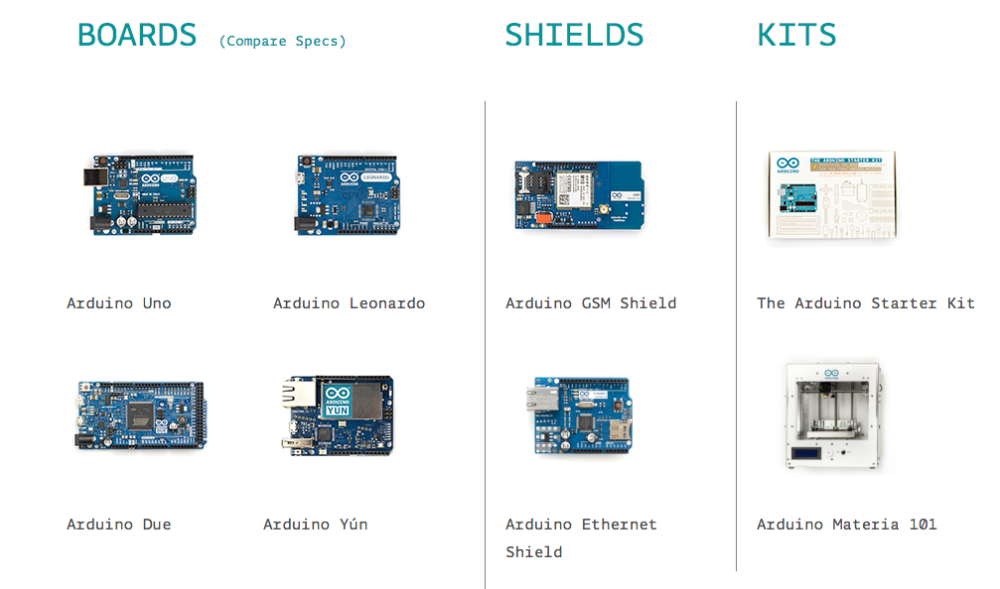

拥抱开源
Geek is the new sexy
Microsoft
你的 Windows 是正版授权的吗？
你的 Office 是正版的吗？
How to make a Windows?
数十个团队、数千人
数年时间
严格的工程管理
$$,$$$,$$$,$$$
免费授权的替代品
Linux 操作系统 (Ubuntu、openSUSE、Arch Linux)
国产办公软件：WPS
Linux 开发模式
开放源代码
自愿贡献代码
远程协作
经费来源：捐赠
github.com
最大的程序员交友网站
506879 次提交 4788 个贡献者

我们能从开源项目获得什么？
大量实例
开源意味着开放，任何人都可以获取
Leet Code OJ 题目源-代码
开源设计
开源硬件：Arduino 开放源代码的单芯片微控制器
如何高效利用开源？
拿来主义
基本的英文阅读能力
模仿：基于基本的开源协议
敢于发布自己的代码
你可能遇到的 ヾ(o◕∀◕)ﾉ
语言障碍：中文社区、翻译软件、Chinglish
与全世界不同背景的人交流：呵呵 lol ooooops
学习到各种有趣的、新潮的东西：新的技术大多是从开源开始的
第一次的喜悦
我的第一次提交
有点儿 Geek：没有你想要的功能？自己写一个吧~

维基百科
287 种语言，英文词条：4 749 311Presentation
Office、WPS等太麻烦
Prezi 桌面版要收费
- 不够酷
Contributing to Open Source
只需要，一个念头
变成粉丝，参与社区活动
翻译、论坛维护
Suggestion、Code、Design……
字幕组、维基……
Free Beer
Ted：演讲、翻译、视频、书籍
优秀的思想可以改变人们对这个世界的看法，使人们反思自己的行为参与开源之后……
面试加分
远程工作，时间管理
搜索
提问的艺术
我所理解的「开源」
分享 自由 公开 参与感 贡献 文化 权利
这世界不只有眼前的苟且，还有诗与远方